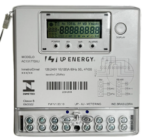

Pode ser definida como: a potência dissipada de um watt, durante o intervalo de 1h. Logo energia é igual à potência dissipada vezes o tempo, e sua unidade é o watt x hora (wh ).
E = P x t
Onde:
O consumo de energia elétrica, através desta formula, é muito importante para as distribuidoras de energia, já que é por intermédio deste calculo que se estabelece o valor a ser pago pela energia consumida, ou pela potência dissipada.
È possível medir o consumo de energia elétrica?
Para sistemas fotovoltaicos o medidor de energia é bidirecional. O medidor bidirecional é um componente fundamental para os sistemas de energia solar fotovoltaica conectados à rede das concessionárias de energia elétrica. Ao contrário do medidor convencional, conhecido também como relógio, o medidor bidirecional mede não só a energia consumida por uma instalação, mas também mede a quantidade de energia injetada na rede elétrica. No caso de uma casa que possua energia solar, o medidor bidirecional fará a medição de toda a energia em kWh que foi injetada na rede pela usina fotovoltaica instalada naquele imóvel, assim como, a energia que foi consumida e, que em outras palavras, foi vendida pela concessionária. Sendo assim, mensalmente a companhia de energia elétrica local fará a leitura da energia que foi consumida e da energia que foi injetada. A ideia do sistema de energia solar fotovoltaica grid-tie (on-grid) ou conectado à rede é que as duas medidas de energia consumida e energia injetada sejam iguais. Dessa forma, o cliente terá uma economia referente a quantidade de energia que ele tenha injetado com a sua própria usina solar fotovoltaica. Ou seja, se você injetou 300 kWh/mês e consumiu 300 kWh/mês, você terá que pagar apenas o TUSD, que nas áreas de abrangência da LIGHT, retorna em créditos que podem ser usados em até 5 anos.

Os painéis fotovoltaicos são medidos em kWp, que é uma unidade de potência utilizada para caracterizá-los. É dependente das condições de temperatura e irradiação a que um painel fotovoltaico é exposto para determinar a quantidade de energia que ele pode gerar. Como ilustração: ao meio-dia, quando o sol incide diretamente no painel, a potência que ele produz é maior do que a potência produzida pelo mesmo painel no início da manhã ou no final da tarde.
O kWp é a unidade mais utilizada em instalações fotovoltaicas por ser mais simples de usar. Ao instalar 10 módulos fotovoltaicos com potência de 450 Wp cada, a potência total produzida será de 4.500 Wp, ou 4,5 kWp. Se a potência de cada módulo fotovoltaico for de 450 Wp, a potência total produzida será de 4.500 Wp, ou 4,5 kWp.
No entanto, tenha em mente que o kWp não representa, em hipótese alguma, a quantidade de eletricidade produzida por um sistema fotovoltaico! O quilowatt-hora é a unidade de medida a ser utilizada neste caso (kWh). Enquanto kWp é usado para medir a potência máxima de um sistema, kWh é usado para medir a quantidade de eletricidade que o sistema produz. É importante lembrar que a eficiência dos painéis não se manterá constante ao longo do dia devido às variações na irradiação.
Embora seja impossível prever quanta energia será produzida por um sistema fotovoltaico durante o dia, mês e ano, é possível estimar quanta energia será produzida por um sistema fotovoltaico em qualquer lugar do planeta usando médias históricas.
A quantidade de energia que um sistema de energia solar pode produzir em uma hora é medida em kWh (quilowatt-hora). Como ilustração, se seus painéis gerarem 1 kW em 60 minutos, então 1.000 W de potência foram gerados a cada hora durante esse período.
O quilowatt-hora (kWh) também é a unidade de medida utilizada pelas próprias distribuidoras de energia para gerar as contas de energia elétrica.
Quando dizemos 1000 Watts, estamos nos referindo a um quilowatt. Quilowatt-hora (kWh) e quilowatt de potência de pico (kWp) são unidades de medida que correspondem a quilowatt-hora e quilowatt de potência de pico, respectivamente. Neste caso, a produção de energia do gerador fotovoltaico (em kWh) e sua produção máxima de energia são medidas por esses dispositivos (kWp). Como resultado, podemos dizer que se um painel de 100 Wp for operado por 40 horas, ele gerará 4.000 Wh, ou 4 kWh.